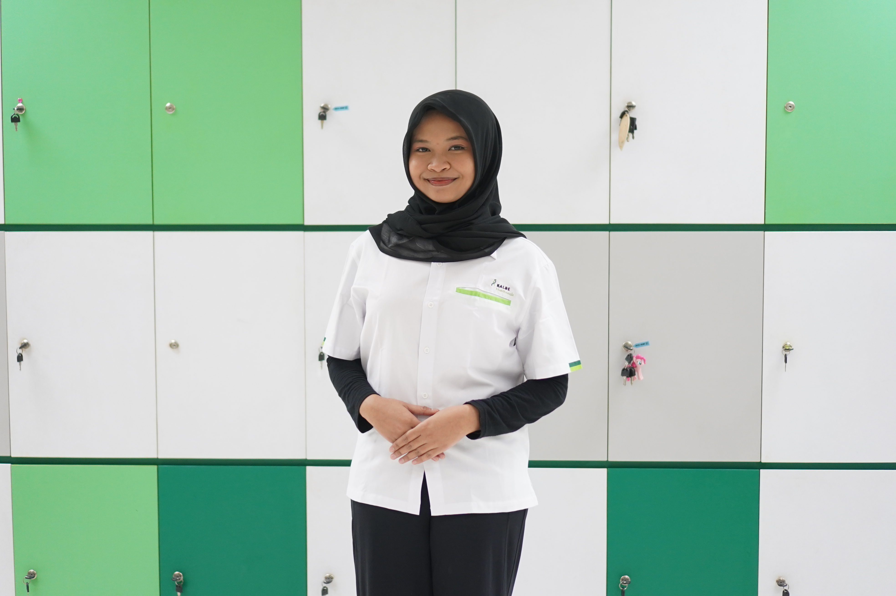
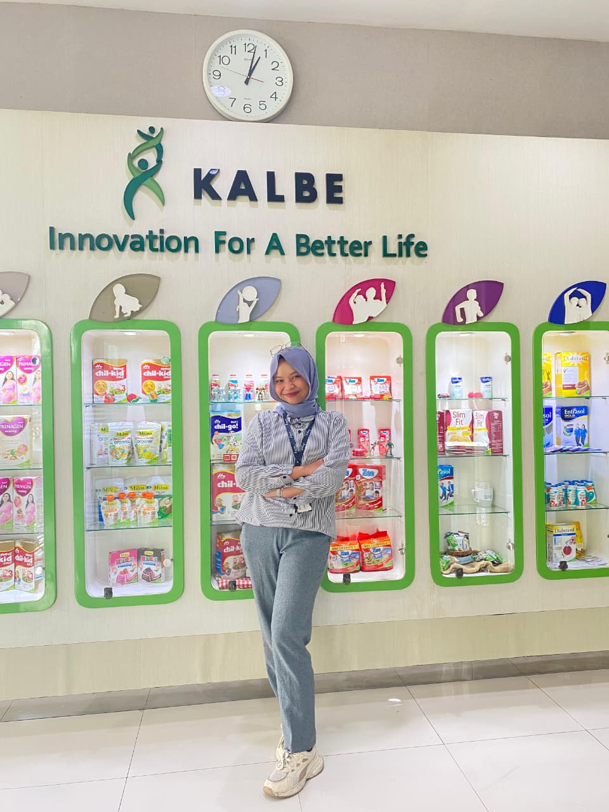

×

Performance Management and Operational Analysis professional with experience in FMCG manufacturing, focusing on performance gap analysis, performance monitoring, continuous improvement, and risk management. Experienced in developing systems and analytical tools, collaborating with cross-functional dept, and supporting management reviews and decision making through dashboards, AI solutions, and system dynamics simulation.

I am an Industrial Engineering graduate from Universitas Gadjah Mada with one year hands-on experience in performance management and operational data analysis at Kalbe Nutritionals. My work focuses on using data to identify KPI and operational gaps, develop performance monitoring and improvement systems, and support risk management and management reviews. I combine analytical skills, system development, and cross-functional collaboration to turn operational data into insights that support performance improvement and decision-making.
Performance Management & Analysis Sr. Staff
PT Kalbe Nutritionals
Bachelor of Industrial Engineering
Universitas Gadjah Mada | CGPA: 3.62 / 4.00

An AI-powered plant performance platform initiated through a Quality Control Circle (QCC) initiative to improve cost monitoring, identify performance anomalies, and support data-driven management decisions.
An integrated monitoring and analysis system for tracking plant expenses, evaluating cost trends, and monitoring cost-saving initiatives to support monthly performance reviews.
Developed a Vensim-based model to simulate plant operations and evaluate production capacity strategies under fluctuating demand.
An integrated improvement initiative combining Focused Improvement and Autonomous Maintenance to address rising SKU complexity through a standardized, data-driven early warning system for production line selection and changeover planning.
Responsible for maintaining plant-level risk governance across departments through risk assessment, control monitoring, and mitigation plan follow-up.
Revitalized the Pandawa Award and introduced new engagement initiatives to strengthen improvement culture, facilitator capabilities, and project quality across plant departments.
Drive routine performance reviews and issue resolution through structured discussions, clear ownership, and timely follow-up.
Review overall plant KPI performance, identify performance gaps, and align improvement priorities with management.
Evaluate annual plant performance, review improvement achievements, and align strategic priorities and programs for the following year.
Identify shopfloor gaps and improvement opportunities through workplace observations, AM audits, and operator feedback.
Promote plant-level improvement initiatives through TPM Quick Win presentations, showcasing solutions to key operational challenges.
Drive bottom-up improvement initiatives through regular facilitator coordination, project monitoring, and strategic improvement reviews.
Supported employee engagement initiatives and training programs to strengthen communication, participation, and organizational development..
Strengthen professional capabilities through structured learning programs in risk management and system dynamics.